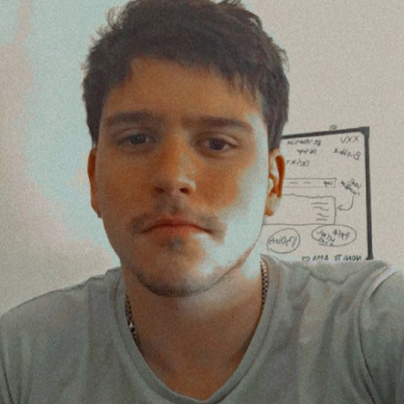
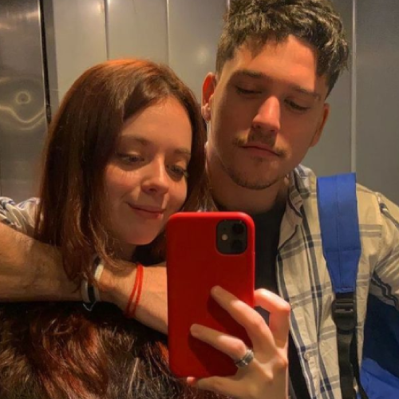
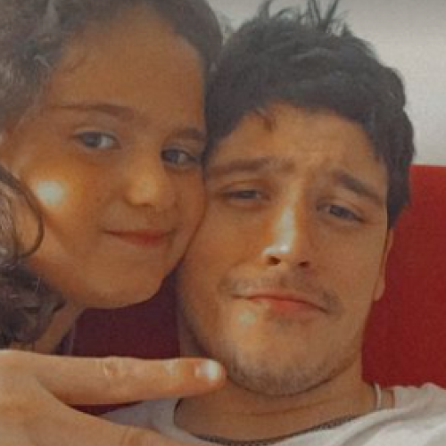
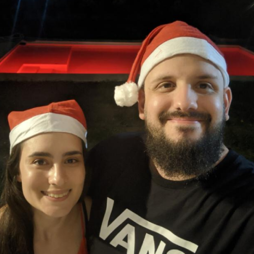
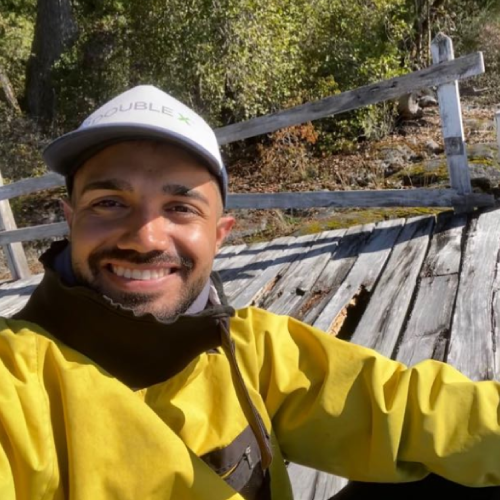

Matias Ponce de León
Dejame tu consulta pulsando en mensaje para contactarte por Whatsapp o escribí una consulta en el "post" de abajo incluyendo todos tus datos
Sobre Mati
Un adulto creativo es un niño que ha sobrevivido.
 Dueño de franquicia "Cloomy"
Dueño de franquicia "Cloomy" Estudié en María Sanchez de Thompson
Estudié en María Sanchez de Thompson- Actualmente en Digital House
 Vivo en Buenos Aires
Vivo en Buenos Aires Gracias a la magia de internet, puedo trabajar en cualquier lugar.
Gracias a la magia de internet, puedo trabajar en cualquier lugar.



Colaboradores
Trabajo en equipo. Siempre!




Formulario de estado
ContactoTengo un amplio conocimiento en informática, experiencia en diversas áreas administrativas y técnicas. Gestión avanzada de software indispensable y gran agilidad para la resolución de problemas. Al margen de eso tengo un emprendimiento en el cual creo y vendo juegos de mesa originales. Buena predisposición, autonomía y responsabilidad. Trabajo en equipo y muestro confianza hacia los demás. Soy puntual y organizado. Mi nivel de inglés es alto de forma escrita e Intermedia de forma oral.
 120
120 45
45 20
20